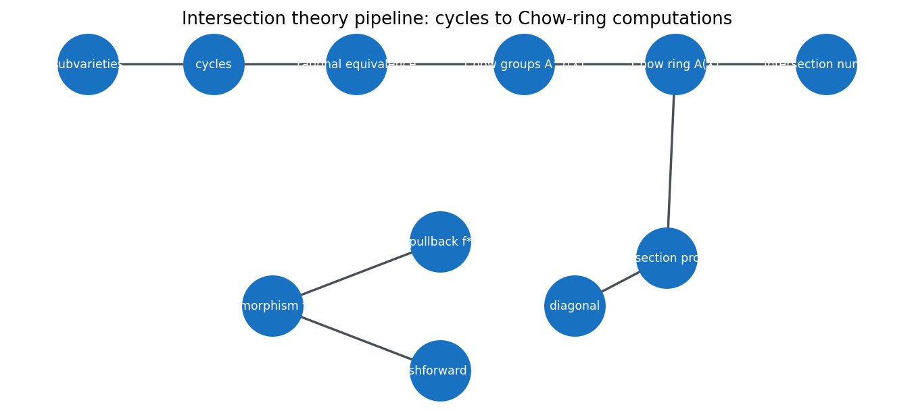
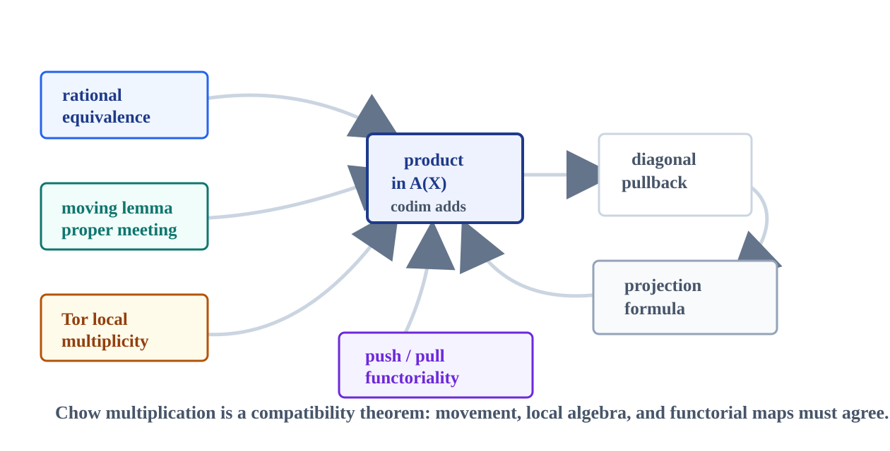
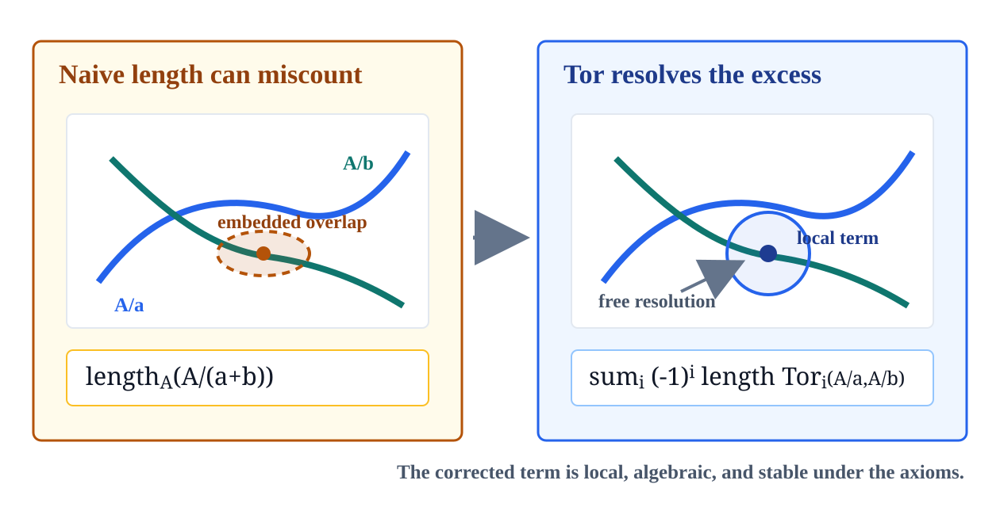
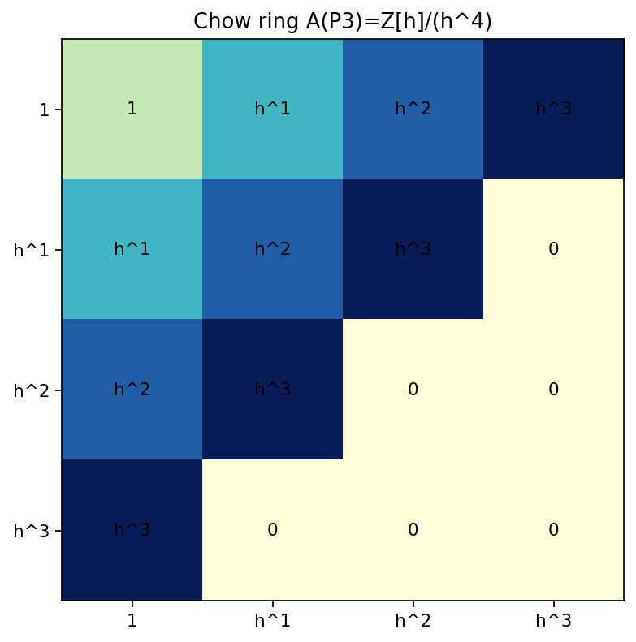
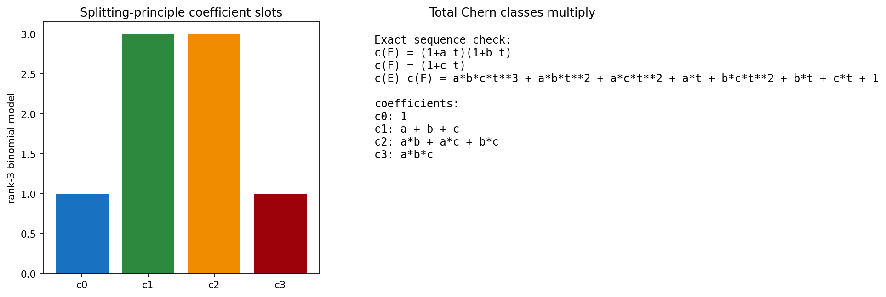
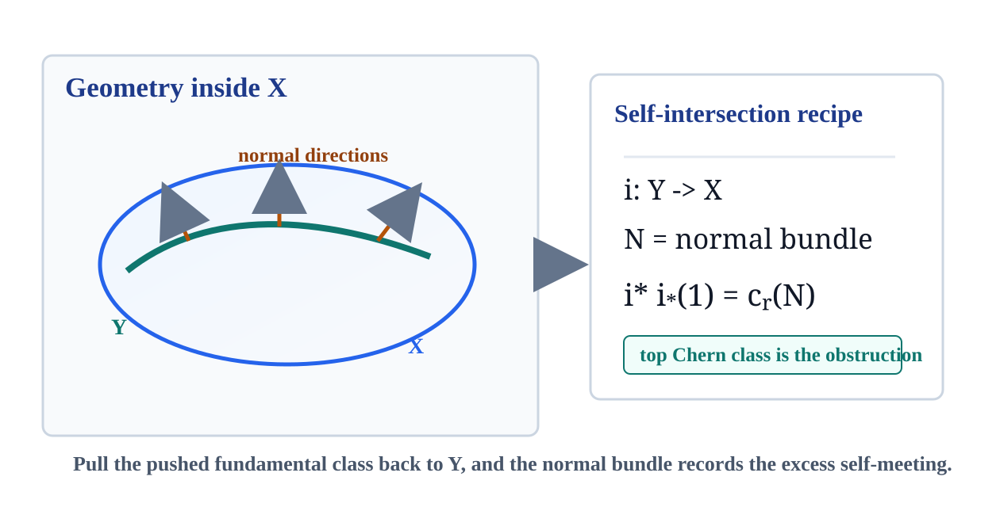
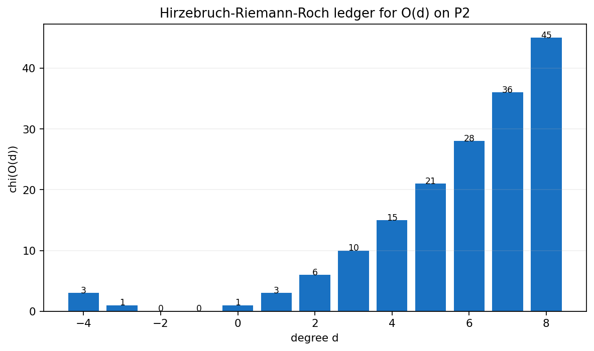
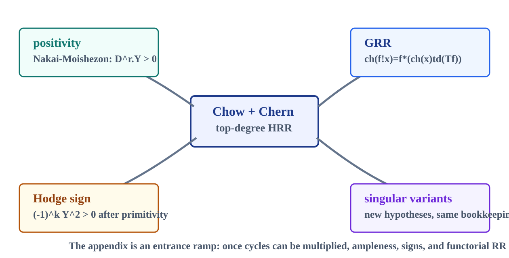

cyclesformal subvariety sums
Chow ringproducts after movement
Chern classesbundles become classes
HRRtop-degree extraction
Euler char.numerical output

A roadmap from cycles and rational equivalence to Chow products, Chern classes, and Hirzebruch-Riemann-Roch.

\(A^r(X)\times A^s(X)\longrightarrow A^{r+s}(X)\). Intersections do not always become numbers; they first become higher-codimension classes.
For \(\dim X=n\), the numerical map is \(\deg:A^n(X)\to \mathbb Z\). Lower codimension data must be multiplied until it reaches the top.
On a surface, two divisors already land in \(A^2(X)\), so the product can be read as an integer. Threefolds and beyond need the whole ladder.
A codimension \(r\) cycle is a finite formal sum \[ Z^r(X)=\bigoplus_{\operatorname{codim}Y=r}\mathbb Z[Y]. \]
The Chow group is \(A^r(X)=Z^r(X)/{\sim_{\mathrm{rat}}}\). The quotient records which cycles can be moved through a rational one-parameter family.
Replace equality of subvarieties by equality after allowed motion. Computation begins once a better-positioned representative is available.
For cycles in good position, the intersection product can be organized as \[ Y\cdot Z=\Delta^*(Y\times Z). \]
Proper maps give \(f_*\), flat maps give \(f^*\), and the projection formula makes the two compatible with products.
The product is not a point-counting trick. It is a functorial operation that survives maps, equivalence, and local multiplicity corrections.

The quotient length \(\operatorname{length}_A A/(\mathfrak a+\mathfrak b)\) can fail when the local intersection carries hidden non-transverse or embedded algebra.
\[ i(Y,Z;x)=\sum_i(-1)^i \operatorname{length}_A \operatorname{Tor}_i^A(A/\mathfrak a,A/\mathfrak b). \]
Tor measures the failure of the naive tensor product to behave like a clean transverse intersection.

Smoothness and proper-position hypotheses are not cosmetic. On singular spaces, cycles can meet at a point where the tangent and local-ring behavior no longer supports the same rules.
Two rulings can be visually simple but algebraically delicate at the vertex. A product rule proven for nonsingular quasi-projective varieties should not be applied blindly.
It separates hypotheses, uses moving arguments when available, and later points to singular variants as a different branch of the theory.

\[ A(\mathbb P^n)=\mathbb Z[h]/(h^{n+1}). \]
The notebook check records \(h^4=0\). The top class \(h^3\) has degree one, so it is the unit of numerical extraction.
intersection-theory-checks.json
Chow truncation checked
\(A^1(X)=\operatorname{Pic}X\) for nonsingular \(X\). Divisor classes sit inside the Chow ring.
\(A(X\times \mathbb A^m)\cong A(X)\). Adding affine coordinates should not change cycle classes.
\(A(Y)\to A(X)\to A(U)\to 0\) for \(U=X-Y\). Remove a closed part, track what remains.
\(A(\mathbb P(E))\) is free over \(A(X)\) with basis \(1,\xi,\ldots,\xi^{r-1}\).

\[ \sum_{i=0}^{r}(-1)^i\pi^*c_i(E)\xi^{r-i}=0. \]
\[ c_t(E)=1+c_1(E)t+\cdots+c_r(E)t^r. \]
A vector bundle is translated into a finite list of Chow classes, one in each codimension up to its rank.
After a pullback that is injective on Chow rings, treat \(E\) as if it had line-bundle roots \(a_i\), then descend symmetric expressions.
\[ c_t(E)=c_t(E')\,c_t(E''). \]
intersection-theory-checks.json
Residual for the exact-sequence product
1, a+b+c, ab+ac+bc, abc
If a section \(s\) of a rank \(r\) bundle \(E\) has zero scheme \(Z(s)\) of codimension \(r\), then \[ c_r(E)=[Z(s)]. \]
For \(i:Y\hookrightarrow X\) with normal bundle \(N\), \[ i^*i_*(1)=c_r(N). \]
The top Chern class is where a bundle's section is forced to vanish; the normal bundle records how \(Y\) meets itself inside \(X\).

The \(a_i\) are bookkeeping symbols; symmetric expressions descend to Chow classes.
Exponential additivity converts exact-sequence behavior into a sum-friendly invariant.
The Todd correction supplies the lower-degree terms that ordinary intersection numbers miss.
The expansions contain denominators: \[ \frac{x}{1-e^{-x}}=1+\frac{x}{2}+\frac{x^2}{12}-\frac{x^4}{720}+\cdots, \] so HRR naturally lives in \(A(X)\otimes\mathbb Q\) before the top degree becomes an integer Euler characteristic.

\[ \chi(E)=\deg\left([\operatorname{ch}(E)\operatorname{td}(T_X)]_n\right). \]
\[ \chi(\mathcal O_{\mathbb P^2}(d))=\binom{d+2}{2}. \]
intersection-theory-checks.json
13 saved rows match \(\binom{d+2}{2}\)
Open the top-degree Riemann-Roch lab to vary \(d\) and watch the quadratic Euler characteristic.
HRR collapses to degree plus the genus correction.
The Todd class packages \(K\), \(c_2\), and the surface constant.
Self-intersection and the normal bundle impose a projective embedding condition.
HRR is not a replacement for the earlier formulas. It is the common source that returns them when the dimension and bundle are specialized.
Nakai-Moishezon tests ampleness by positivity of \(D^r\cdot Y\) on every integral \(Y\).
For primitive middle cycles on a complex projective variety of dimension \(2k\), the sign pattern is \((-1)^kY^2>0\).
\[ \operatorname{ch}(f_!x)=f_*(\operatorname{ch}(x)\operatorname{td}(T_f)). \]
